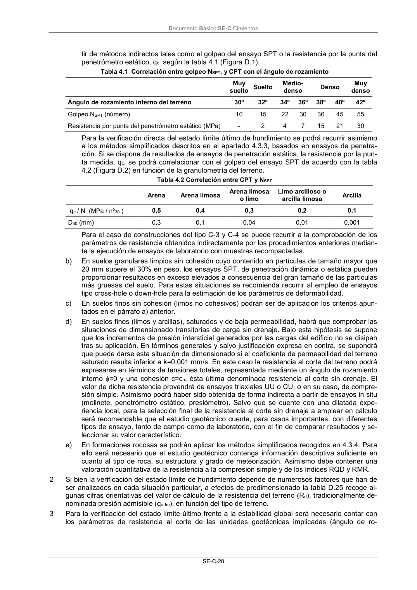

DB-SE-C · Página 33 · versión 2019-12-20
SHA256: a71133f4b0dca253e45ea3071c70f2a512354bcc5cd841bf89b1a502f567ac5e · página física 33 de 165 · métodos de encabezado
solo si están cotejados.
Formatos: Markdown · JSON de bloques · PDF p. 33 · imagen PNG
Documento Básico SE-C Cimientos SE-C-28 tir de métodos indirectos tales como el golpeo del ensayo SPT o la resistencia por la punta del penetrómetro estático, qc según la tabla 4.1 (Figura D.1). Tabla 4.1 Correlación entre golpeo NSPT, y CPT con el ángulo de rozamiento Muy suelto Suelto Medio- denso Denso Muy denso Ángulo de rozamiento interno del terreno 30º 32º 34º 36º 38º 40º 42º Golpeo NSPT (número) 10 15 22 30 36 45 55 Resistencia por punta del penetrómetro estático (MPa) - 2 4 7 15 21 30 Para la verificación directa del estado límite último de hundimiento se podrá recurrir asimismo a los métodos simplificados descritos en el apartado 4.3.3, basados en ensayos de penetra- ción. Si se dispone de resultados de ensayos de penetración estática, la resistencia por la pun- ta medida, qc, se podrá correlacionar con el golpeo del ensayo SPT de acuerdo con la tabla 4.2 (Figura D.2) en función de la granulometría del terreno. Tabla 4.2 Correlación entre CPT y NSPT Arena Arena limosa Arena limosa o limo Limo arcilloso o arcilla limosa Arcilla qc / N (MPa / nº30 ) 0,5 0,4 0,3 0,2 0,1 D50 (mm) 0,3 0,1 0,04 0,01 0,001 Para el caso de construcciones del tipo C-3 y C-4 se puede recurrir a la comprobación de los parámetros de resistencia obtenidos indirectamente por los procedimientos anteriores median- te la ejecución de ensayos de laboratorio con muestras recompactadas. b) En suelos granulares limpios sin cohesión cuyo contenido en partículas de tamaño mayor que 20 mm supere el 30% en peso, los ensayos SPT, de penetración dinámica o estática pueden proporcionar resultados en exceso elevados a consecuencia del gran tamaño de las partículas más gruesas del suelo. Para estas situaciones se recomienda recurrir al empleo de ensayos tipo cross-hole o down-hole para la estimación de los parámetros de deformabilidad. c) En suelos finos sin cohesión (limos no cohesivos) podrán ser de aplicación los criterios apun- tados en el párrafo a) anterior. d) En suelos finos (limos y arcillas), saturados y de baja permeabilidad, habrá que comprobar las situaciones de dimensionado transitorias de carga sin drenaje. Bajo esta hipótesis se supone que los incrementos de presión intersticial generados por las cargas del edificio no se disipan tras su aplicación. En términos generales y salvo justificación expresa en contra, se supondrá que puede darse esta situación de dimensionado si el coeficiente de permeabilidad del terreno saturado resulta inferior a k=0,001 mm/s. En este caso la resistencia al corte del terreno podrá expresarse en términos de tensiones totales, representada mediante un ángulo de rozamiento interno =0 y una cohesión c=cu, ésta última denominada resistencia al corte sin drenaje. El valor de dicha resistencia provendrá de ensayos triaxiales UU o CU, o en su caso, de compre- sión simple. Asimismo podrá haber sido obtenida de forma indirecta a partir de ensayos in situ (molinete, penetrómetro estático, presiómetro). Salvo que se cuente con una dilatada expe- riencia local, para la selección final de la resistencia al corte sin drenaje a emplear en cálculo será recomendable que el estudio geotécnico cuente, para casos importantes, con diferentes tipos de ensayo, tanto de campo como de laboratorio, con el fin de comparar resultados y se- leccionar su valor característico. e) En formaciones rocosas se podrán aplicar los métodos simplificados recogidos en 4.3.4. Para ello será necesario que el estudio geotécnico contenga información descriptiva suficiente en cuanto al tipo de roca, su estructura y grado de meteorización. Asimismo debe contener una valoración cuantitativa de la resistencia a la compresión simple y de los índices RQD y RMR. 2 Si bien la verificación del estado límite de hundimiento depende de numerosos factores que han de ser analizados en cada situación particular, a efectos de predimensionado la tabla D.25 recoge al- gunas cifras orientativas del valor de cálculo de la resistencia del terreno (Rd), tradicionalmente de- nominada presión admisible (qadm), en función del tipo de terreno. 3 Para la verificación del estado límite último frente a la estabilidad global será necesario contar con los parámetros de resistencia al corte de las unidades geotécnicas implicadas (ángulo de ro-
